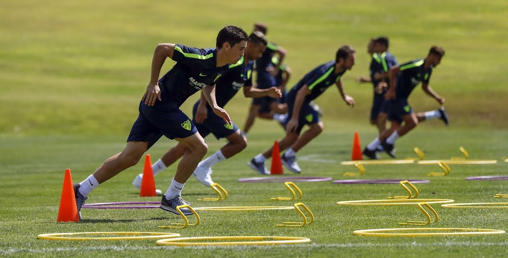
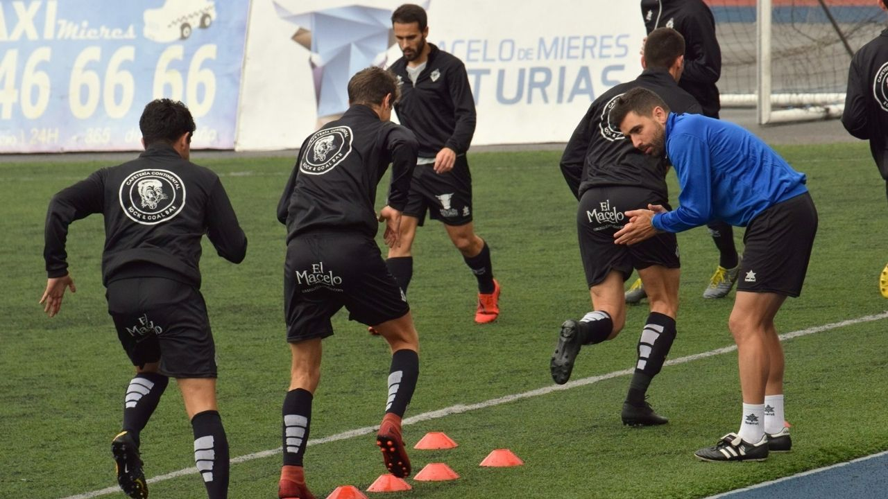

El entrenamiento deportivo es un proceso sistemático y planificado que busca mejorar el rendimiento físico, técnico y táctico de un deportista o equipo. El objetivo principal del entrenamiento deportivo es lograr un alto nivel de preparación física y mental para competir en una disciplina deportiva específica.
Entrenamiento Deportivo
Cúal es el objetivo del Entrenamiento Deportivo en Five-Group ?
El entrenamiento deportivo en Five-Group tiene como finalidad mejorar las capacidades físicas del deportista, como la fuerza, la velocidad, la resistencia, la flexibilidad y la coordinación. Además, también se busca mejorar las habilidades técnicas y tácticas necesarias para competir en la disciplina deportiva.
El entrenamiento deportivo es esencial para lograr un alto rendimiento en el deporte y para minimizar el riesgo de lesiones. Además, también puede tener beneficios para la salud, como mejorar la salud cardiovascular, la densidad ósea y la composición corporal.

Cuales son las tareas que realizan nuestros Entrenadores Deportivos?
Un Entrenador Deportivo de Five-Group, es un profesional que se encarga de diseñar, planificar y supervisar el proceso de entrenamiento deportivo de un deportista o equipo. Las tareas específicas que realiza un entrenador deportivo pueden variar dependiendo de la disciplina deportiva y el nivel de competición, pero algunas de las tareas más comunes incluyen:
- Planificación del entrenamiento: Un entrenador deportivo es responsable de diseñar un programa de entrenamiento efectivo y personalizado para cada deportista o equipo, teniendo en cuenta sus objetivos, habilidades y necesidades específicas.
- Enseñanza de habilidades: El entrenador deportivo debe enseñar y mejorar las habilidades técnicas y tácticas necesarias para competir en la disciplina deportiva, como la técnica de un golpe o la estrategia de un juego.
- Supervisión del entrenamiento: El entrenador deportivo debe supervisar el proceso de entrenamiento, asegurándose de que se realicen los ejercicios adecuados y de que se mantenga una técnica correcta, así como de que se cumpla con las normas de seguridad.
- Motivación: El entrenador deportivo debe motivar y apoyar a los deportistas, ayudándolos a superar obstáculos y a mantener su motivación y compromiso durante el proceso de entrenamiento.
- Evaluación del rendimiento: El entrenador deportivo debe evaluar el rendimiento de los deportistas, identificar fortalezas y debilidades y ajustar el programa de entrenamiento en consecuencia.
- Gestión de la competición: El entrenador deportivo puede ser responsable de la gestión de la competición, incluyendo la estrategia de juego, la gestión del tiempo y la toma de decisiones.
En resumen, el entrenador deportivo desempeña un papel importante en el desarrollo y éxito de los deportistas y equipos, asegurándose de que tengan el apoyo y la orientación necesarios para alcanzar sus objetivos deportivos.
Entrenamiento Deportivo en Five-Group
En el ámbito de las Ciencias del Deporte, es muy útil para la valoración de la condición física, el control del entrenamiento, el análisis del rendimiento energético, el estudio de los efectos de la actividad física y el deporte competitivo en la estructura y composición corporal del individuo, selección de talentos y para estudios biomecánicos.
En Five-Group, el entrenamiento deportivo se realiza a través de una planificación sistemática y periódica que incluye ejercicios específicos, descanso adecuado y una nutrición adecuada. También es importante tener en cuenta la edad, el género, la experiencia previa y las metas personales del deportista al diseñar un programa de entrenamiento deportivo personalizado y efectivo.
Te invitamos a ponerte en contacto con nosotros para informarte mejor sobre éste y nuestros otros servicios. ¡Muchas gracias!
 Contacto